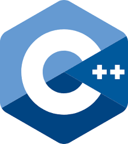

Alvarez Juan Cruz
Programador Junior
Gaiman, Chubut
juancruzalvarez@gmail.com
2804-858518
32
Lenguajes
- JavaScript

- html
- Css

- Python
- SQL
- C
- 
- C++
Idioma
Ingles - lectura (BASICO)
Ingles - escritura(BASICO)
Estudios Realizados
Primario Completo: Escuela n°84/ Puerto Madryn-Chubut
Secundario Completo: Escuela Agrotecnica n°733 / Gaiman-Chubut
Estudios Universitario: 3er año de Analista Programador Universitario en Universidad Nacional de la Patagonia San Juan Bosco (UNPSJB). Hasta el dia de la fecha
Cursos Realizados
-“Mantenimiento y Reparación de equipos informáticos” realizado en el Centro de Formación Profesional n°653 en la ciudad de Trelew-Chubut
-“Analista del conocimiento” (plan 111mil trayecto 2017) realizado en la localidad de Gaiman-Chubut